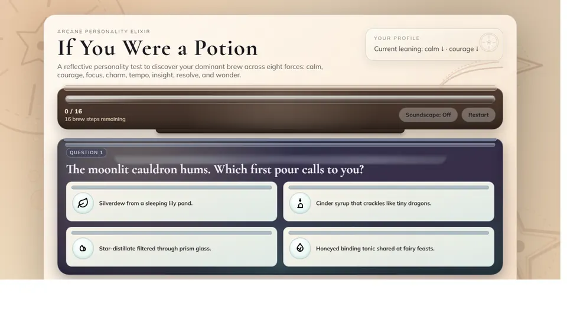
QUIZ SYSTEM
Potionality
A reflective personality test calculating your dominant brew across eight elemental forces with weighted mathematical scoring.
Product Development Engineer @ AMD & NTU Computer Engineering Graduate. Specializing in high-volume console SoC bring-up, bare-metal C/C++ firmware, conversational AI algorithms, and interactive web architecture.
Since graduating from NTU in 2022, I serve as a Product Development Engineer at AMD. My work focuses on the lifecycle of high-volume custom console SoCs—including the PlayStation 5 and PlayStation 5 Pro.
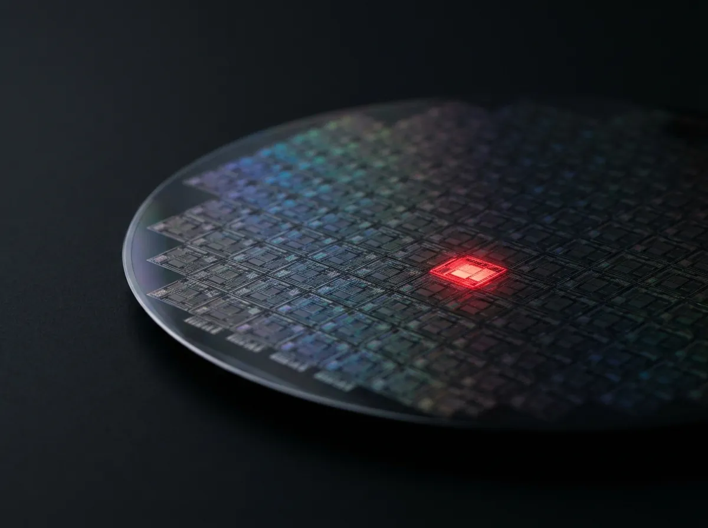
Responsible for new product bring-up, defect screening, test methodology, and continuous yield and quality improvements. In 2024, our innovation was awarded 2nd Place at AMD's Asia Tech Showcase.
"Silicon by day; firmware, automation tools, and web platforms by night."
Developed to eliminate inconsistency in Intentional Camera Movement (ICM) photography. This system automates DSLR camera lens zoom and focus rotation during long exposures through precision motorized gearing.
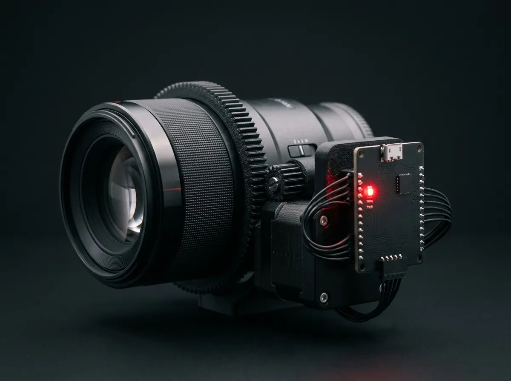
Powered by an Arduino AtMega microcontroller programmed in bare-metal C/C++. The core engineering feat was firmware optimization: squeezing step-interpolation and acceleration profiles into highly constrained microcontroller SRAM while preserving real-time deterministic timing.
Developed under Project Lyon 2.0 in partnership with Google Cloud and specialist partner OniGroup. Deployed to assist over 6,000 incoming university freshmen transitioning to university life during the virtual Freshmen Orientation.
Worked directly on the Natural Language Understanding (NLU) decision flows, learning algorithms, and conversational routing rules that directed students to NTU Smart Campus resources, schedules, and virtual events with instant responsiveness.
What began in 2013 as a personal experiment grew into a viral multiplayer gaming network peaking at 400 concurrent connected users (CCU) simultaneously.
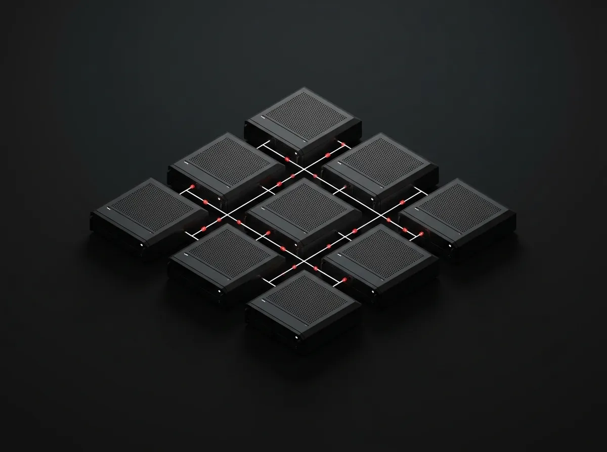
As the sole programmer, I engineered custom Java server plugins utilizing Object-Oriented Design Principles (OODP), optimized packet serialization to reduce latency, managed MySQL database state sync, and operated bare-metal Linux server hardware under high load.
A full-stack publishing ecosystem powering a prolific creative library of 50 serialized web novels and 818 chapters. Combining custom desktop authoring tools with an automated image processing pipeline and a Next.js reader.
Authored a 5,800-line Python Tkinter wizard with DOCX import and HTML/RTF Markdown conversion. Supported by a Python PIL image optimizer producing responsive 320/640/960px WebP/JPG variants, deployed via GitHub Actions and static Next.js export.
Nine interactive browser applications designed, coded, and deployed across games, identity tests, and narrative engines.

A reflective personality test calculating your dominant brew across eight elemental forces with weighted mathematical scoring.
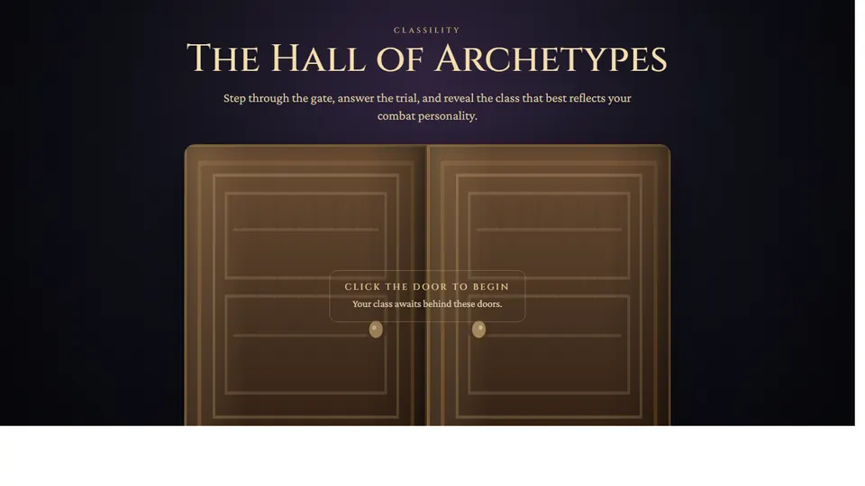
Algorithmic RPG character class questionnaire. Roll for identity, calculate stat spreads, and forge your personal destiny.
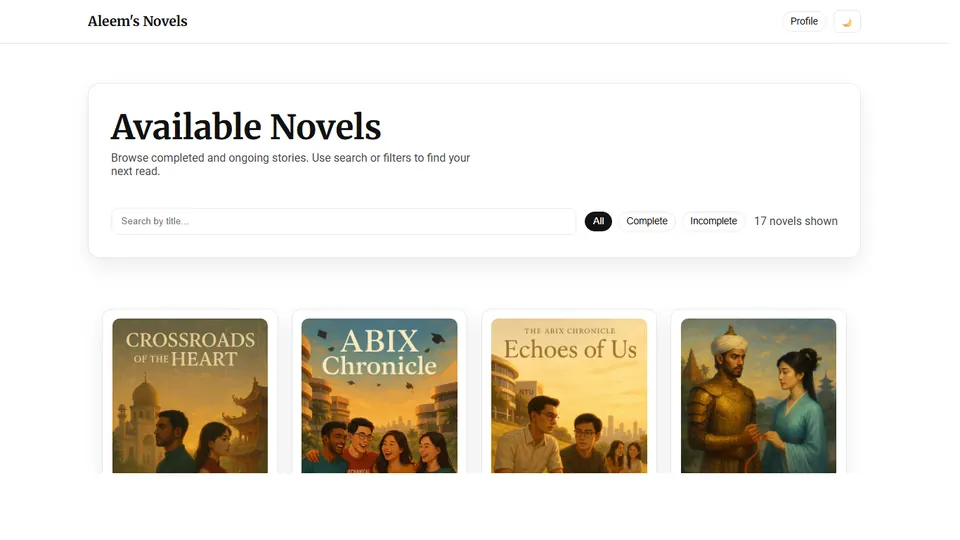
Next.js web novel library with chapter navigation, typography controls, responsive covers, and rich Markdown reader.
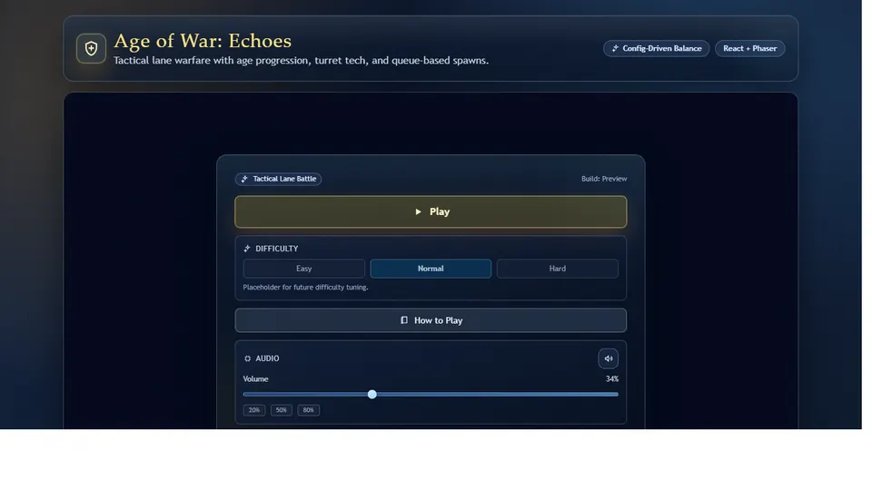
Zero-dependency HTML5 canvas remake of the classic evolutionary strategy game with era transitions, unit queues, and turrets.
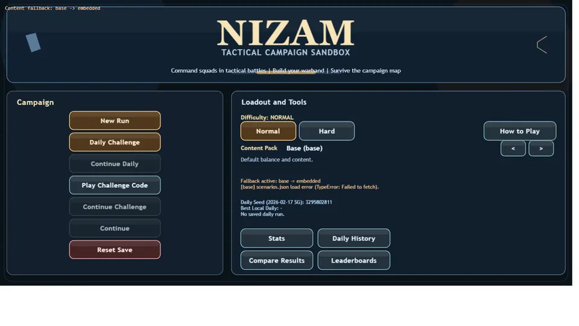
Mount & Blade Bannerlord-inspired tactical sim with village recruitment, regional economy, unit rank progression, and combat.
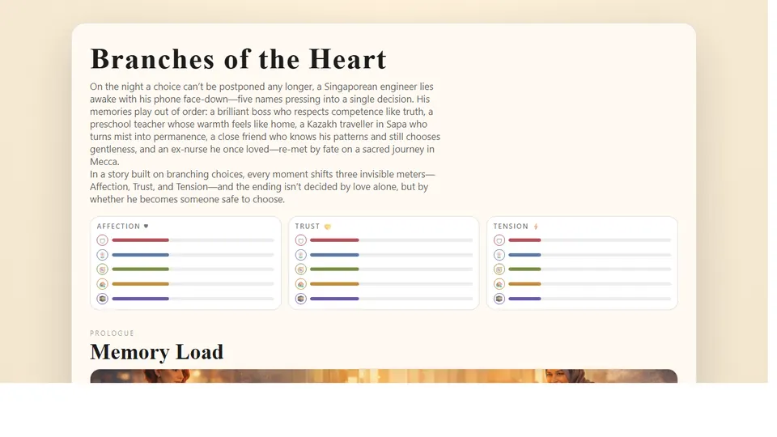
Interactive branching narrative engine where dialogue choices shift affection, trust, and tension scores across multiple endings.
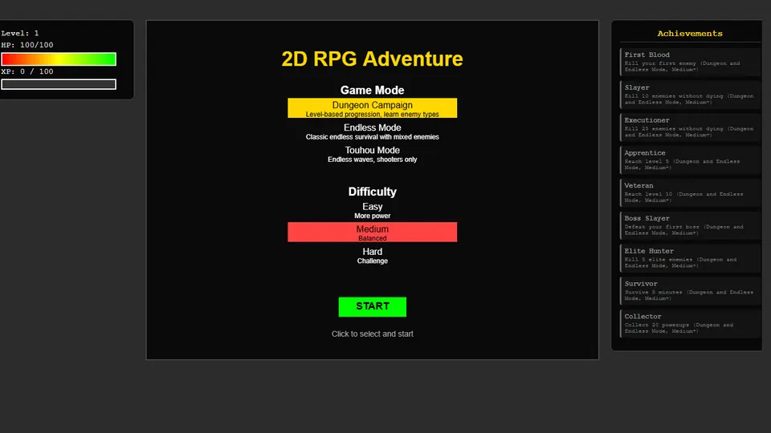
"Wanted an MMO, got Touhou." Fast-paced canvas bullet-hell survival shooter with dense particle patterns and dodge mechanics.
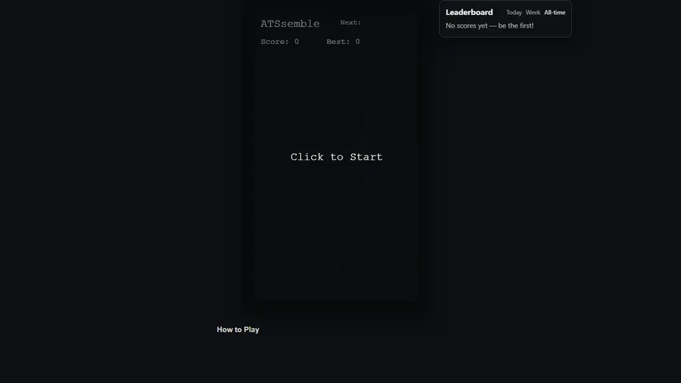
Pure JavaScript implementation with Super Rotation System (SRS) wall-kicks, ghost piece projection, lock delay, and score tiers.
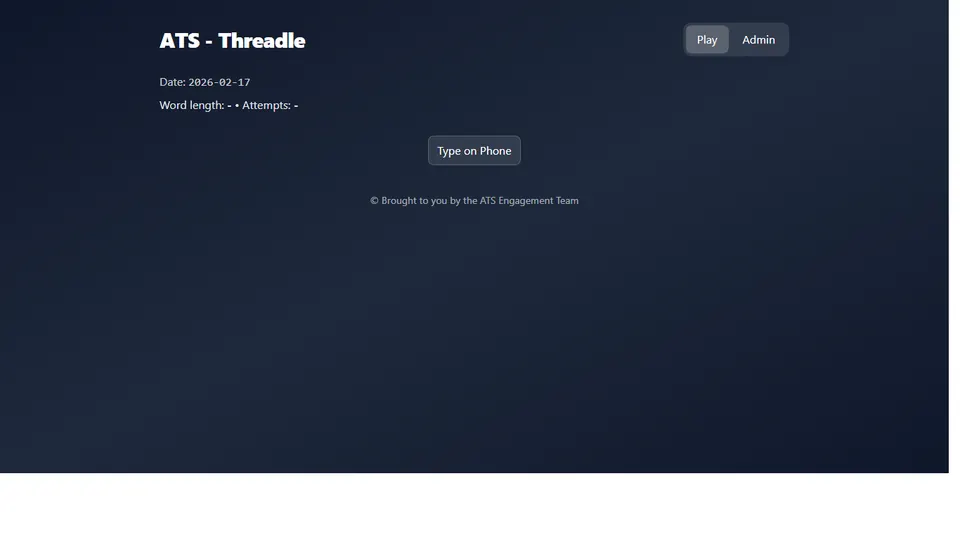
Daily 5-letter word puzzle evaluator with letter-state analysis, tactile on-screen keyboard, statistics storage, and daily seed.
Structured technical capabilities across silicon lifecycle, bare-metal firmware, cloud platforms, and full-stack software.
Query telemetry, engineering pillars, and system parameters directly from the command line.
Graduated from Nanyang Technological University (NTU) with a Bachelor's Degree in Computer Engineering (AI & Cyber Security). Working at AMD on PlayStation 5 and PS5 Pro console SoC bring-up and yield enhancement. An engineer fascinated by logic, deterministic hardware, and interactive digital worlds.
Open to high-impact silicon engineering discussions, firmware architecture, and innovative technical collaborations.